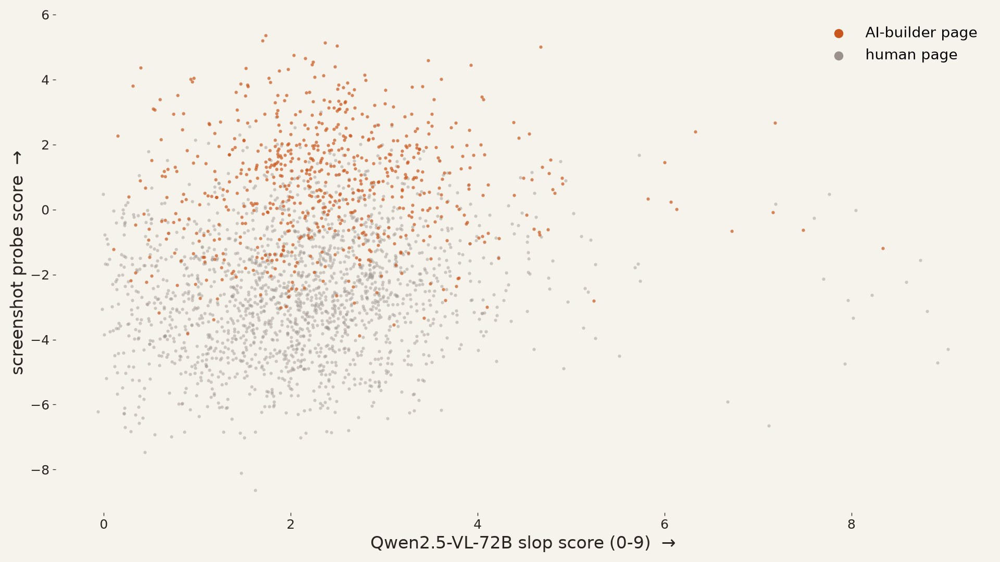
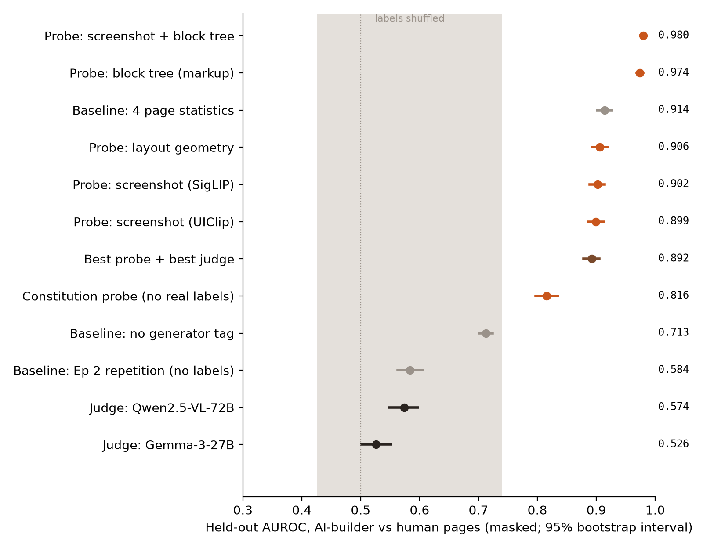
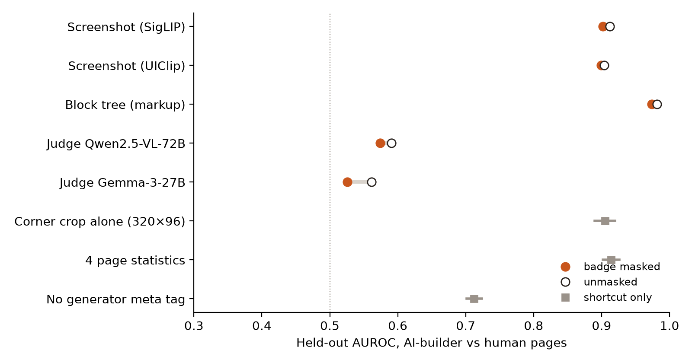
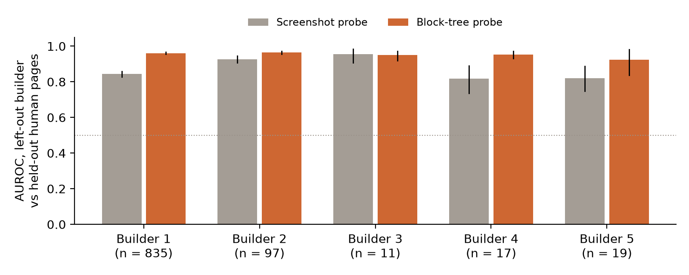
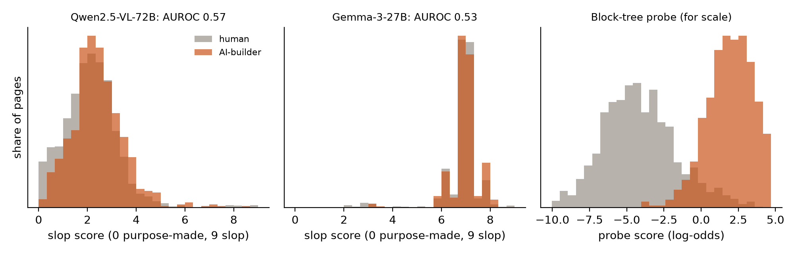

← Research·The Taste Stack · Episode 3·Experiments··Updated
A tiny probe beats a VLM at spotting AI-built sites
A one-layer probe on a page's block tree told AI-builder sites from human sites at AUROC 0.974. Two open vision-language judges, asked "is this template slop?", scored 0.574 and 0.526. A probe that never saw a real label, trained only on pages generated from a written taste constitution, scored 0.816.

Summary: the short answer and the key results
In short
Do tiny probes beat a vision-language judge at telling slop from purpose-made web design, and can a written taste constitution train them?
On 2,495 held-out live web pages, a logistic probe on the page's block tree told sites on AI site builders from human sites at AUROC 0.974, and a probe on the screenshot at 0.902. Two open vision-language judges given the same screenshot and a slop rubric scored 0.574 and 0.526, close to chance, though they agreed with each other. Four page statistics (word count, block count, page height, request count) scored 0.914, so much of what any detector reads is how big and how built a page is; the probes still work inside groups of pages with similar statistics (0.81 to 0.93). A probe trained only on 286 pages that an open model wrote from a taste constitution, with no real label, reached 0.816. Covering the builders' badges cost the probes at most 0.010 and the judges at most 0.035. The labels are where a page is hosted, not a designer's verdict.
Key results
| What we tested | Result | Compared with |
|---|---|---|
| Does a tiny probe beat a VLM judge? | Yes, by 0.40. Block-tree probe 0.974 [0.968, 0.979] AUROC; best judge (Qwen2.5-VL-72B with the constitution as rubric) 0.574 [0.548, 0.597]; paired difference +0.400 [+0.377, +0.425]. 2,495 held-out pages | Probes on shuffled labels: 0.43-0.74. Gemma-3-27B judge 0.526 |
| Is it the badge? | No. Masking the bottom-right corner, where builders put their badge, cost the screenshot probe 0.010 (0.912 → 0.902) and the block-tree probe 0.008 | The corner crop alone scores 0.905: it carries page style, not only the badge |
| Is it page size? | Partly. Four page statistics score 0.914, above the screenshot probe. Within deciles of that score the block-tree probe keeps 0.928 and the screenshot probe 0.813; the judges 0.54 (exploratory) | The "no generator meta tag" rule: 0.713 |
| Can the judges be trusted? | They agree with each other, not with the labels. Spearman 0.689 [0.664, 0.711] between two model families, 75% half-agreement (both rulers passed), yet both near chance. Qwen passed its known-answer bar (0.856); Gemma failed it (0.601) and gave 75% of pages a 7 | Their scores barely track the probes' (Spearman 0.04-0.19) |
| Does a taste constitution train a probe? | Yes, to 0.816 [0.797, 0.835], from 286 generated training pages and no real labels; 0.895 on the known-answer set. Most of it is layout geometry (0.813 alone); within page-statistic deciles 0.650 | Probes trained on 1,044 real labelled pages: 0.899-0.974 |
| Does it carry to a builder it never saw? | Yes. Left-out builder: screenshot probe 0.873 mean over five builders, block-tree probe 0.951 | Trained with all builders: 0.902 and 0.974 |
01Introduction
Ask a 72-billion-parameter vision-language model to rate the first screen of a web page from 0 to 9 for how much it looks like generic template slop. On pages made with AI site builders its median answer is 2.3; on sites people built, 2.1. A logistic regression on each page's block tree, trained in seconds on 1,044 labelled pages, tells the two apart 97 times in 100: its AUROC is 0.974. (AUROC, used for every number in this note, is the chance that a randomly picked AI-builder page scores higher than a randomly picked human page: 0.5 is a coin flip, 1.0 is perfect.) This note asks why the small model wins, whether it is reading anything you would call taste, and whether a written definition of taste can replace the labels.
| Tool | What it is | Analogy | Needs labels? | In this note |
|---|---|---|---|---|
| Small probe | A tiny classifier (here one logistic-regression layer) on numbers already computed for each page: an image embedding, the counts of small subtrees in its block tree, its layout grid. It answers one yes/no question | A food thermometer: one cheap reading, no opinion about anything else | Yes, a few hundred | Arms A1-A4 |
| VLM judge | A vision-language model shown the screenshot and asked for a 0-9 slop score; we read the probability it gives each digit and take the average (LLM-as-a-judge) | A food critic who tastes the dish and gives a mark | No | Two judges from two model families |
| Taste constitution | A short written list of principles: what slop looks like and what its purpose-made opposite looks like (ours has eight) | A cookbook's "rules of the house" | No | A rubric for the judges, and the source of training pages |
| Constitutional classifier | A probe trained on examples an LLM generates from the constitution, not on real labels; the recipe of the Constitutional Classifiers paper, which guards a production model this way | A thermometer calibrated on dishes cooked to the rule book, then used on real ones | No real ones | Arm A5 |
What is known. Episode 1 found, for AI-written text, that small probes matched SAE-feature probes (0.997 against 0.998 AUROC) while a one-question LLM judge scored 0.801, and that the judge's grader disagreed with a second model family on 42% of real verdicts. Episode 2 built a design index of web pages and found that sites on AI site builders reuse one skeleton across industries: for 90% of them, the most similar page from another industry is another AI-builder page (27% by chance). UIClip trained an image model to score interface quality, and Constitutional Classifiers showed that classifiers trained on constitution-generated data can guard a model.
What is missing. Design-quality tools are now sold as judges and rewards. Nobody has put a small probe, an off-the-shelf vision-language judge and a constitution-trained classifier side by side on real pages with a known source, nor checked each one for the obvious shortcuts: a builder's badge, page size, the markup a tool writes.
Do tiny probes beat a vision-language judge at telling slop from purpose-made design, and does data generated from a written taste constitution train them?
What this note does. It scores twelve detectors on the same 2,495 held-out pages, each with its interval. It contributes:
- a leaderboard of five probes, two open vision-language judges, a constitution-trained probe, a combination and three cheap baselines, on pages whose source is known;
- shortcut checks: every image detector scored with the builder's badge masked and unmasked, a corner-only probe, a page-statistics probe and a leave-one-builder-out test;
- a judge reliability check on known answers and on real pages against a second model family, the check Episode 1's grader failed;
- a taste constitution for web pages and a test of the Constitutional Classifiers recipe on design;
- a threshold explorer (section 4.7) over the held-out scores.
What counts as success. Written down before any held-out score:
- every ruler passes its bar: the recomputed embeddings match Episode 2's, the mask hides the badges, each judge separates known slop from curated sites, the constitution's two sides differ, and the two judges agree on real pages;
- a "probe beats judge" claim holds with the badge masked, beside a page-statistics baseline and shuffled labels;
- the constitution probe is scored only on real pages it never saw.
02Setup
2.1 Labels: where a page is hosted, not a verdict
"Slop" has no answer key, so the study uses labels whose source is known and says plainly what they are.
| Set | Label 1 | Label 0 | Dev (1 / 0) | Held-out (1 / 0) |
|---|---|---|---|---|
| Main task | Live sites on five AI site builders' default subdomains | Live human sites in the same 12 industries | 301 / 743 | 678 / 1,817 |
| Known-answer set (never used for any choice) | Templated pages (one template filled for 12 industries) and pages one-shot by open code models | Sites from a curated design-reference library | — | 193 / 48 |
| Constitution pages (training A5 only) | A page told to commit one slop principle | A page told to follow all eight purpose-made principles | 381 kept: 286 train (briefs 0-2), 95 check (brief 3) | |
Dev and held-out are Episode 2's split, by a hash of the domain (30% / 70%). One builder holds 85% of the AI-builder pages; builders are numbered, not named. The industries are finance, health, law, restaurants, pets, software, fashion, non-profits, real estate, education, travel and design studios.
2.2 The detectors
- Probes (A1-A4): standardised features, L2 logistic regression, the strength chosen by 5-fold cross-validation on dev. Inputs: SigLIP (A1) or UIClip (A2) embedding of the first screen; the block-tree histogram (A3: counts of small subtrees of visible blocks, a Weisfeiler-Lehman summary); layout geometry (A4: a 32 × 30 occupancy grid, spacing, palette and type size). A1 and A3 together is C1.
- Judges: Qwen2.5-VL-72B-Instruct (AWQ) and Gemma-3-27B-it, on vLLM, greedy, one image per call. The prompt defines template slop and purpose-made design and asks for one digit; the score is the expected digit from the first token's probabilities. Two prompts were tried on dev: plain, and with the constitution as a rubric. The rubric did better for both (dev AUROC 0.581 and 0.510, against 0.491 and 0.397) and is used on held-out.
- Constitution probe (A5): masked SigLIP plus layout geometry, trained only on generated pages. For each industry and each of four briefs, Gemma-3-27B wrote four pages told to commit one named slop principle and four told to follow the purpose-made side of all eight (384 pages, 381 kept).
- Baselines: four page statistics (log word count, block count, page height, request count) in a probe; a rule "no generator meta tag means AI" (no AI-builder page has one, 43% of human pages do); Episode 2's label-free repetition score; and the screenshot and block-tree probes retrained on labels shuffled within industry, 10 times each.
- The mask: for every page of every class, the bottom-right 320 × 96 pixels of the 1,280 × 800 screenshot are painted grey, and elements inside that box are removed from the block tree and layout. The headline numbers are masked.
03How the study was run
- Write the plan with its Design section and five predictions, and commit it before any held-out score (predictions in section 6).
- Recompute features for 3,885 pages from Episode 2's renders, masked and unmasked, on A10G GPUs; check they match Episode 2's (the embedding check).
- Check the mask on 40 dev AI-builder screenshots (the mask check).
- Generate the constitution pages (384, one H100, 12 minutes), render them in Chromium at 1,280 × 800 and featurise them with Episode 2's code.
- Tune on dev only: probe strength by cross-validation, and the judge prompt (2 prompts × 2 judges × 1,044 pages); every step in results.tsv.
- Score every detector once on held-out (2,495 main-task pages, 241 known-answer pages), with 2,000 stratified bootstrap resamples shared by every arm so differences are paired.
- Re-check on outputs: read the pages each detector got most wrong (section 4.4).
| Fixed before any trial | Changed after reading dev results or the data |
|---|---|
| Labels, splits, arms, the mask box, the constitution, the two judge prompts, the rulers and five predictions | The judge prompt: the rubric version, chosen on dev |
| Constitution pages from Mistral-Small-3.2-24B | Its pages came back as token loops. The cause was a vLLM setting (no images allowed) that broke Gemma the same way in that app. Switched to Gemma-3-27B with the setting removed, a "keep it under about 300 lines" hint and a larger token budget; a plan amendment made before any held-out score |
| Leave-one-builder-out on held-out pages | Three builders have 11-19 pages, so the left-out builder's dev and held pages are both tested (none trained that probe), and the page-weighted mean is reported beside the plain mean (amendment) |
Conditions: vLLM 0.10.1.1 on one H100 per judge, temperature 0, one output token with the top 20 log-probabilities; images at 1,280 × 800. Probes in scikit-learn 1.5 on a laptop, seconds each. Total spend: $16.27 of Modal compute, from Modal's billing (hard cap $100 in code); no paid API.
04Results
4.1 Four rulers pass; one judge fails its known-answer bar
| Ruler | Bar | Result | Pass |
|---|---|---|---|
| Embedding check: recomputed embeddings match Episode 2's (median cosine, 3,885 pages) | ≥ 0.99 | 1.000 | Yes |
| Mask check: a builder badge visible outside the mask, 40 dev AI-builder screenshots (an agent-read contact sheet) | ≤ 1/40 | 0/40 | Yes |
| Judge known-answer check: each judge separates known slop (templated and open-model pages) from curated-library sites (AUROC, 346 pages); parse rate | ≥ 0.80; ≥ 98% | Qwen 0.856; Gemma 0.601; 100% parsed | Qwen yes; Gemma no |
| Constitution-data check: the constitution pages kept by the render filter; brief-3 pages separated by a probe trained on briefs 0-2 | ≥ 85%; ≥ 0.80 | 99.2%; 0.964 | Yes |
| Judge-agreement check: the two judges agree on real held-out pages (Spearman; top-half agreement) | ≥ 0.50; ≥ 70% | 0.689; 74.7% | Yes |
Gemma's failure is not a parsing problem: it gave 1,875 of 2,495 held-out pages a 7. It stays in the tables as registered, reported as a judge that failed its check.
4.2 Every probe beats both judges by more than 0.3

The block-tree probe scored 0.974 [0.968, 0.979] and the best judge 0.574 [0.548, 0.597]: a paired gap of +0.400 [+0.377, +0.425] (Figure 1). Every probe sits far above the shuffled-label band (0.43 to 0.74); the judges sit inside it. The order holds within each industry (averaged over the 12: block tree 0.975, screenshot 0.899, judges 0.53 and 0.59), so the gap is not a difference in industry mix.
Adding the best judge to the best probe made it worse: 0.892 against 0.974, a paired difference of −0.082 [−0.094, −0.071]. The judge's score adds noise, not information the probe lacks; the two barely correlate (Spearman 0.04 to 0.19).
4.3 Not the badge; partly page size

The badge. AI site builders float an "Edit with …" or "Made in …" badge in the bottom-right corner. Masking it cost each probe 0.005 to 0.010 and each judge 0.017 to 0.035 (Figure 2). The corner crop alone scores 0.905, but that crop also shows the page's background, buttons and chat widgets; with the corner gone, the rest of the screenshot still scores 0.902.
Page size. Four numbers (words, blocks, page height, network requests) scored 0.914 [0.902, 0.926], level with or above every image probe. AI-builder pages are built from the same component library, so they have similar sizes. To see what remains, we cut held-out pages into ten groups by the page-statistics score and averaged each detector's AUROC within the groups (exploratory, after the held-out run): block tree 0.928, screenshot 0.813, layout geometry 0.748, constitution probe 0.650, judges 0.54. The probes read more than size; the judges read little of either.
A builder it never saw. Trained without one builder and tested on that builder's pages against held-out human pages, the screenshot probe scored 0.82 to 0.96 (mean 0.873; weighted by pages 0.852) and the block-tree probe 0.92 to 0.97 (mean 0.951; Figure 3). The largest builder, with 835 pages, was the hardest for the screenshot probe (0.843): without it, the other four have only 43 dev pages to learn from.

4.4 The judges agree with each other and miss what the probes see

Both judges passed the reliability check Episode 1's grader failed: across model families they agreed at Spearman 0.689 [0.664, 0.711] and put 74.7% of pages in the same half. Yet both are near chance on the labels (Figure 4). Agreement between two judges shows they read the same thing; it does not show the thing is the label.
What the judge reads. We looked at the 10 human pages Qwen scored most slop-like and the 10 AI-builder pages it scored least (a contact sheet, not published). All 10 "sloppiest" human pages were broken: hosting error pages, expired-domain parking pages, a video player error and pages still loading, which had passed Episode 2's render filter. The 10 most "purpose-made" AI-builder pages were polished: large serif display type, dark photography, editorial layouts. The judge rewards polish and punishes breakage, and AI builders now deliver polish.
What the probe gets wrong. The block-tree probe's 10 most AI-like human pages were modern start-up and SaaS pages, and two of them carried an AI builder's edit badge on their own domain: those "human" labels are wrong. Some of the probe's errors are the label's.
4.5 A taste constitution trains a probe to 0.816, mostly through layout
| Constitution probe, features | Brief-3 generated pages | Real held-out | Within industry | Known-answer set |
|---|---|---|---|---|
| Screenshot + layout geometry (A5, registered) | 0.964 | 0.816 [0.797, 0.835] | 0.818 | 0.895 |
| Layout geometry only | 0.925 | 0.813 | 0.813 | 0.933 |
| Screenshot (SigLIP) only | 0.960 | 0.683 | 0.688 | 0.272 |
| Block tree only | 0.940 | 0.384 | 0.380 | 0.069 |
Trained on 286 generated pages from briefs 0-2 and never shown a real label, the registered constitution probe scored 0.816 [0.797, 0.835] on real held-out pages and 0.895 on the known-answer set (Table 5). Taken apart, the transfer is layout: geometry alone carries 0.813, the screenshot alone 0.683, and the block tree goes the wrong way (0.384). The generated pages differ in markup in ways real builders' pages do not, so a block-tree probe trained on them learns the generator's habits.
Two checks temper it. Within groups of similar page size it falls to 0.650, so part of what it learned is "slop pages are short". And the generated pages are more alike than real ones: mean pairwise similarity of their screenshots 0.57 (slop side) and 0.55 (purpose-made side), against 0.47 for real human pages and 0.50 for real AI-builder pages. Told to be purpose-made, the generator still wrote one family of pages. The constitution taught the probe a direction, not the range of real design.
4.6 On the known-answer set, length is enough
On templated and open-model pages against curated-library sites, the page-statistics probe scored 1.000: those pages are short and the curated sites are long. The set still checks a judge, which cannot count words, but it cannot rank probes. There the block tree scored 0.908 and Episode 2's label-free repetition score 0.945, while the screenshot probes fell to 0.60-0.62: trained on builders' pages, they learned what builders' pages look like, not what a hand-written template looks like.
4.7 Try it: flag the pages each detector would flag
The explorer needs JavaScript. It lets you pick a detector, choose what share of the 2,495 held-out pages to flag, and see how many AI-builder pages it catches and how many human pages it flags by mistake.
27% is the share of AI-builder pages in the held-out set: a perfect detector flagging 27% catches all of them.
AI-builder pagehuman pageleft to right: lowest to highest score; right of the line is flagged
ROC: caught (up) against wrongly flagged (across). The chosen detector in orange, the others in grey (hover a curve for its name); the dashed line is chance.
05Implications for AI safety
Design judges are about to become rewards: a model that writes web pages gets trained to please a judge. Two lessons follow. First, an off-the-shelf vision-language judge scored these pages on polish and breakage, not on the generic-ness its rubric described, and a judge from another family agreed with it. A policy trained against it would learn polish, which AI builders already produce. Agreement between judges is not a validity check; a known-answer set and a reading of the judge's most confident calls are. Second, the probes that won read how a page was built (its block tree, its size) as much as how it looks. A reward built on them could be gamed by changing markup without changing the design. Before using any design score as a reward, test it with the badge masked, against a page-statistics probe and on a builder it never saw, and read its most confident mistakes.
06Predictions
| # | Prediction (confidence) | Threshold | Result | Score | Reason |
|---|---|---|---|---|---|
| P1 | The best tiny probe beats the best VLM judge (75%) | ≥ +0.10, interval above 0 | +0.400 [+0.377, +0.425] | Hit | The judges were near chance |
| P2 | Masking the badge costs the screenshot probe little (60%) | < 0.05 | 0.010 | Hit | The rest of the screenshot carries the signal |
| P3 | A constitution-only probe transfers to real pages (40%) | ≥ 0.70 | 0.816 | Hit | Mostly through layout and page size |
| P4 | Two judges from different families agree on real pages (55%) | Spearman ≥ 0.50 | 0.689 | Hit | They agree, and both are near chance |
| P5 | The screenshot probe generalises to an unseen builder (60%) | mean ≥ 0.80 | 0.873 | Hit | Builders share a component style |
Post-mortem. What surprised me: the judges were near chance, and four page statistics beat the screenshot probe. What I'd change: P1 and P2 were too easy to carry information, and the page-size stratification and a test of whether judge agreement means accuracy should have been registered. The lesson for the guide: two judges agreeing is a test of the judges, not of the labels; and a known-answer set should be length-matched, or a word count passes it perfectly.
07What this does not show
- Taste. The labels are where a page is hosted. Some AI-builder pages are good design and some human pages are slop; 2 of the 10 human pages the block-tree probe found most AI-like carry a builder's badge on their own domain. No designer rated these pages.
- All judges. Two open models, one 0-9 scale, two prompts, one screenshot. A frontier closed model, pairwise comparisons or a full-page scroll might do better; they were not tried.
- Other builders, devices or dates. Five builders, one holding 85% of pages; desktop first screens; live pages rendered in November 2026.
- A clean known-answer set. It is separable by length alone, so the probes' known-answer numbers mean little beyond that.
- Constitution quality. One constitution, one generator, and its pages are more alike than real ones. A better generator or several constitutions might transfer further, or less.
08Reproduce it
bash experiments/slop-probes/reproduce.sh rebuilds every number from Episode 2's index (about $15-25 of Modal GPU time; --dry-run prints the commands). make_figures.py draws every figure from results/ and prints the numbers it plotted. Screenshots, page HTML and page ids stay out of the repository.
09What's next
Episode 5 turns a brand book into a checkable spec whose checker returns a proof, not a score. Episode 6 uses that, and the detectors here, as rewards in an RL environment, where the shortcuts found in this note become hacks to watch for. Ratings of a sample of these pages by designers would replace provenance with taste.
10Questions readers ask
What does the winning probe actually read?
The block-tree probe (also called the markup probe) reads a histogram of 1,024 counts: how often each small pattern of nested blocks appears in the page (a section holding a flex row of three boxes, each holding a heading and a paragraph). Pages built from one component library repeat the same patterns whatever the business, which is what Episode 2 found. It reads construction, not colour or type. That is why it also wins inside each industry, and why it could be gamed by changing markup.
Why are the judges so bad, if they agree with each other?
They answer a different question. Asked how much a page is template slop, both rated broken and parked pages as slop and polished pages as purpose-made, consistently. Polish is what AI builders deliver, so that consistent answer says little about the label. Gemma also compressed its scale: it gave a 7 to 75% of pages.
What does a constitution page look like?
For "a small law firm", told to commit S1 ("one skeleton for any business"), Gemma wrote "Evergreen Legal": a nav bar ending in a pill button, a centred headline ("Navigating Law, Securing Your Future"), two pill buttons and three identical service cards. Told to follow all eight purpose-made principles, it wrote the same firm with a navy masthead, a "recent success" panel naming a case and its settlement, four practice-area cards and a "Why choose us" section. The second page is more specific, but it is still an ordinary page, which is why the generated pages are more alike than real ones (section 4.5).
Isn't the badge enough?
It might be, for a detector that reads it: the corner alone scores 0.905. With the corner painted over, every probe lost at most 0.010. The badge is one of many signs of a builder; the layout and block tree carry the rest.
Should I use a probe or a judge to filter AI-built pages?
For provenance, a probe: it is cheaper and far more accurate here. For quality, neither is validated: the probe reads construction and the judge reads polish. Run the masked, size-matched and left-out-builder checks in this note, and a known-answer set, before trusting either.
AAppendix: data files
| File | What it holds |
|---|---|
| results/probes.json | Every probe and baseline: chosen strength, dev AUROC, held-out AUROC [95% CI], within-industry AUROC, known-answer AUROC |
| results/judges.json, judge_rulers.json | Judges: dev AUROC per prompt, held-out masked and unmasked, score histogram, parse share; the judge known-answer and judge-agreement checks |
| results/comparison.json, combos.json | Paired probe − judge differences (P1) and the combinations |
| results/shuffle.json, lobo.json | Shuffled-label probes; leave one builder out |
| results/constitution.json | The constitution probe and its parts, the brief-3 separability check, and the repetition of each generated class |
| results/exploratory_page_stats.json | Exploratory: AUROC within page-statistic deciles |
| results.tsv, results/spend/ | The dev tuning ledger and the spend ledger |
| report/data.js | The explorer's data: held-out scores of six detectors and the label, in shuffled order, no page ids |
How to cite
Lie, A. (2026). A tiny probe beats a VLM at spotting AI-built sites. The Taste Stack, Episode 3. steerlab. https://albertlieyingadrian.github.io/steerlab/experiments/slop-probes/report/
RReferences
- Constitutional Classifiers: Defending against Universal Jailbreaks across Thousands of Hours of Red Teaming, 2025: arxiv.org/abs/2501.18837
- Constitutional AI: Harmlessness from AI Feedback, 2022: arxiv.org/abs/2212.08073
- Judging LLM-as-a-Judge with MT-Bench and Chatbot Arena, NeurIPS 2023: arxiv.org/abs/2306.05685
- UIClip: A Data-driven Model for Assessing User Interface Design, UIST 2024: arxiv.org/abs/2404.12500
- Sigmoid Loss for Language Image Pre-Training (SigLIP), ICCV 2023: arxiv.org/abs/2303.15343
- WebUI: A Dataset for Enhancing Visual UI Understanding with Web Semantics, CHI 2023: arxiv.org/abs/2301.13280
- Weisfeiler-Lehman Graph Kernels, JMLR 2011: jmlr.org/papers/v12/shervashidze11a
- Qwen2.5-VL Technical Report, 2025: arxiv.org/abs/2502.13923
- Gemma 3 Technical Report, 2025: arxiv.org/abs/2503.19786
- Interrogating Design Homogenization in Web Vibe Coding, 2026: arxiv.org/abs/2603.13036
- The Taste Stack, Episode 1: Small probes match SAE features at spotting AI text; Episode 2: Has the web converged?